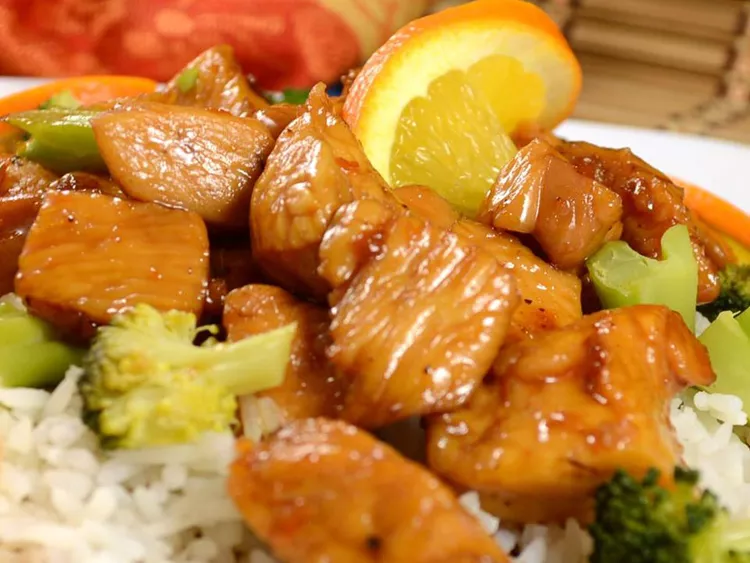

Orange, Honey and Soy Chicken

Orange, honey and soy chicken ingredients
This is a lovely sweet-and-sticky meal without the guilt the family whole family will enjoy.
If you are cooking with rice or another side that takes awhile to cook, prepare that first.
- 2 skinless, boneless chicken breast halves, diced
- 2 oranges, juiced
- ¼ cup soy sauce
- ¼ cup honey
- 1 tablespoon garlic paste
- 1 tablespoon ginger paste
- Ground black pepper to taste
How to prepare the orange, honey and soy chicken
- Combine chicken, orange juice, soy sauce, honey, garlic paste, ginger paste, and black pepper in a large nonstick skillet over medium-high heat.
- Cook and stir until the sauce reduces to a sticky glaze and the chicken is cooked through, about 20 minutes.
- Enjoy your meal.